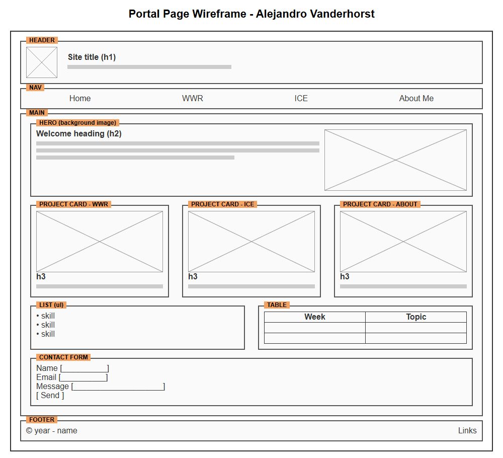

Alejandro Vanderhorst - WDD 130
The portal page collects all of my WDD 130 work in one place: the Whitewater Rafting (WWR) site, my ICE challenges, and an About Me page. It should look clean and professional so I can keep using it as a portfolio.
A simple monogram with my initials in a navy circle with an orange ring.
Navy #1B263B
header, footer, text
Steel Blue #415A77
nav, cards
Slate #778DA9
borders, accents
Light Gray #E0E1DD
page background
Orange #F4A261
buttons, hover
Headings: Poppins (Google Fonts), fallback Arial
Body text: Open Sans (Google Fonts), fallback Arial
Layout: header with logo and title, navigation bar (Home, WWR, ICE, About Me), main with a hero section, three project cards in a grid, a skills list next to a schedule table, a contact form, and a footer.
